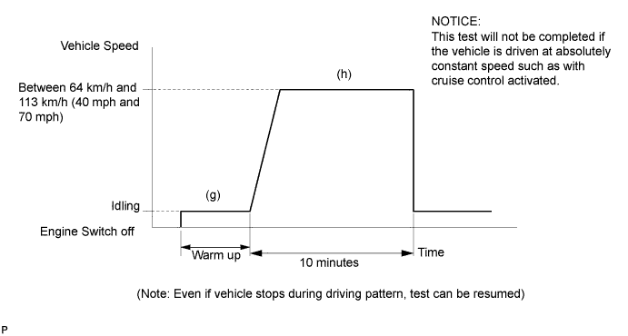
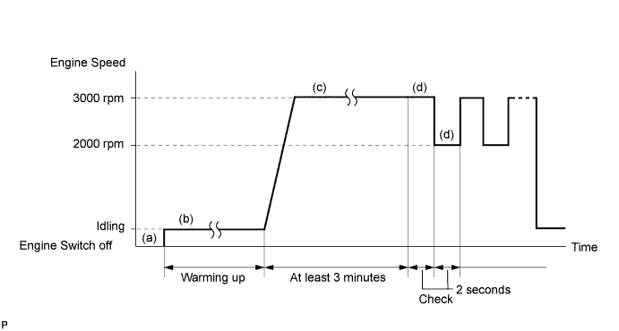
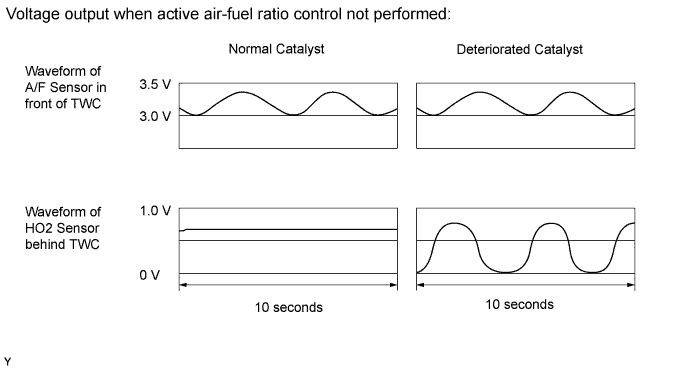

DTC P0420 Catalyst System Efficiency Below Threshold (Bank 1) |
DTC P0430 Catalyst System Efficiency Below Threshold (Bank 2) |
| DTC Code | DTC Detection Condition | Trouble Area |
| P0420 | The OSC value is less than the standard value under active air-fuel ratio control (2 trip detection logic). |
|
| P0430 | The OSC value is less than the standard value under active air-fuel ratio control (2 trip detection logic). |
|



| 1.CHECK ANY OTHER DTCS OUTPUT (IN ADDITION TO DTC P0420 OR P0430) |
Connect the intelligent tester to the DLC3.
Turn the engine switch on (IG) and turn the tester on.
Enter the following menus: Powertrain / Engine and ECT / DTC.
Read DTCs.
| Result | Proceed to |
| P0420 or P0430 is output | A |
| P0420 or P0430 and other DTCs are output | B |
|
| ||||
| A | |
| 2.PERFORM ACTIVE TEST USING INTELLIGENT TESTER (A/F CONTROL) |
Connect the intelligent tester to the DLC3.
Start the engine and turn the tester on.
Warm up the engine at an engine speed of 2500 rpm for approximately 90 seconds.
Enter the following menus: Powertrain / Engine and ECT / Active Test / Control the Injection Volume for A/F Sensor.
Perform the Control the Injection Volume for A/F Sensor operation with the engine in an idling condition (press the RIGHT or LEFT button to change the fuel injection volume).
Monitor the voltage outputs of the A/F and HO2 sensors (AFS B1 S1 and O2S B1 S2 or AFS B2 S1 and O2S B2 S2) displayed on the tester.
| Case | A/F Sensor (Sensor 1) Output Voltage | HO2 Sensor (Sensor 2) Output Voltage | Main Suspected Trouble Area |
| 1 |   |  | - |
| 2 |  | |
|
| 3 | | |
|
| 4 | | |
|
| Result | Proceed to |
| Case 1 | A |
| Case 2 | B |
| Case 3 | C |
| Case 4 | D |
|
| ||||
|
| ||||
|
| ||||
| A | |
| 3.INSPECT FOR EXHAUST GAS LEAK |
Check for exhaust gas leakage.
|
| ||||
| OK | |
| 4.CHECK DTC OUTPUT (DTC P0420 AND/OR P0430) |
According to the DTCs output in the first step (Check Any Other DTCs Output), proceed to the next step by referring to the table below.
| Result | Proceed to |
| P0420 is output | A |
| P0430 is output | B |
| P0420 and P0430 is output | A and B |
|
| ||||
| A | ||
| ||
| 5.INSPECT FOR EXHAUST GAS LEAK |
Check for exhaust gas leakage.
|
| ||||
| OK | ||
| ||